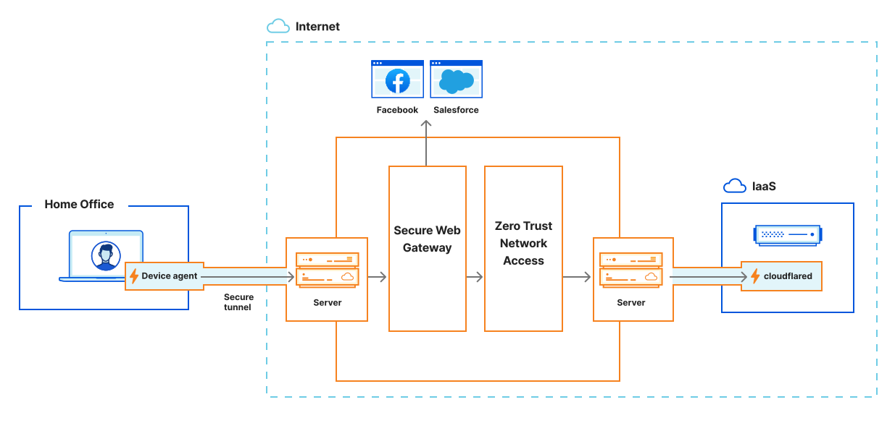

社内用のAIツールや検証環境が増えると、利用を認める人と退職・異動時に外す権限を把握しにくくなります。Cloudflare Accessを例に、アプリごとのアクセス管理と、管理をすり抜ける直結経路の確認方法を説明します。

公式図は利用者・Cloudflare・アプリケーションの3層を示す
Cloudflare Accessは、利用者情報を確認する中継役としてアプリケーションの前に立ちます。利用者の要求をIdP、端末状態、通信条件で評価し、許可された通信だけを通信元へ渡します。
VPNを外すこと自体が目的ではありません。通信へ入った後もアプリケーション単位で判断できる構成へ変えることが目的です。
公開ホスト名から接続元サーバーまでを1本の経路で守る
最初にAccessアプリケーションを作り、公開ホスト名と許可規則を設定します。その後、Cloudflare Tunnelで接続元サーバーから外向きの接続を作ります。公式資料も、Tunnel経路より先にAccessアプリケーションを用意するよう勧めています。
接続元サーバーではAccessトークンを検証します。DNSやファイアウォールの誤設定でCloudflareを迂回した要求が届いても拒否するためです。
規則は初期状態で拒否から始める
自社運用アプリケーションは初期状態で拒否です。情シスグループ、管理済み端末、特定国など、必要な条件を許可へ足します。人のログインと、自動処理（CI・Webhook）用のサービス認証情報は、同じ規則に混ぜません。
セッション期間はアプリケーションのリスクで決めます。管理画面は短く、閲覧中心の社内ポータルは長くするなど、IdPセッションとAccessセッションの両方を確認します。
迂回経路と退職セッションを試験する
接続元サーバーのIPへ直接接続して拒否されること、未管理端末が止まること、許可グループから外した利用者のセッションが失効することを試します。設定画面の規則表示だけでは完了にしません。
APIやWebhook（外部通知）は、人のブラウザ ログインを求めると止まります。サービストークン等の機械用経路を分け、認証情報の更新と失効を運用へ入れます。